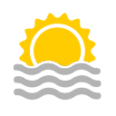

{{contactdetails.city}}
{{contactdetails.country}}
Temp:{{temp.main.temp-273 | number}}
pressure:{{temp.main.pressure}}
humidity:{{temp.main.humidity}}
weatherdescription:{{temp.weather[0].description}}

pressure:{{temp.main.pressure}}
humidity:{{temp.main.humidity}}
weatherdescription:{{temp.weather[0].description}}
